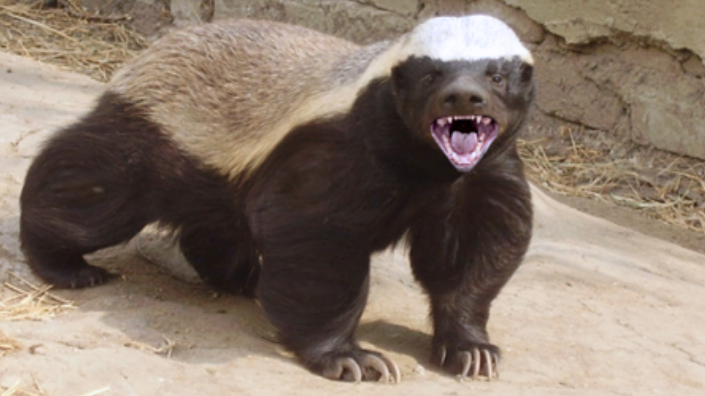

- Conservation Status - Least Concern
- Location - Africa, W & S Asia
- Colour - Silver Grey & Black
- Length - 60 - 77 cms (23.5 - 30 inches)
- Tail - 20 - 30 cms (8 - 12 inches)
- Weight - 7 - 13 Kgs (15 - 29 lbs)
- Life Expectancy - 26 Yrs (in Captivity)
Habitat
Honey Badgers can be found in the dry grasslands and moist deciduous forests of Africa and western and southern Asia.
